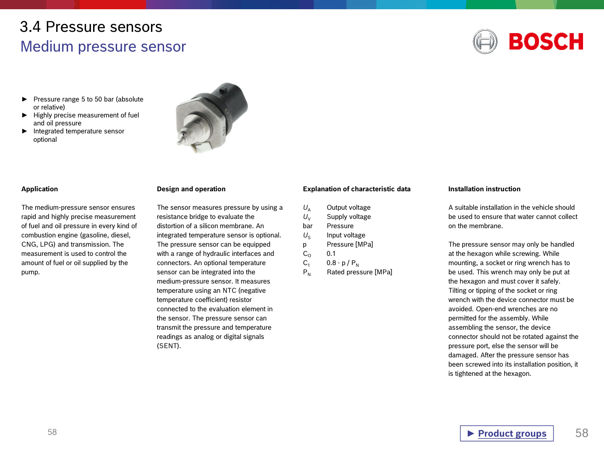
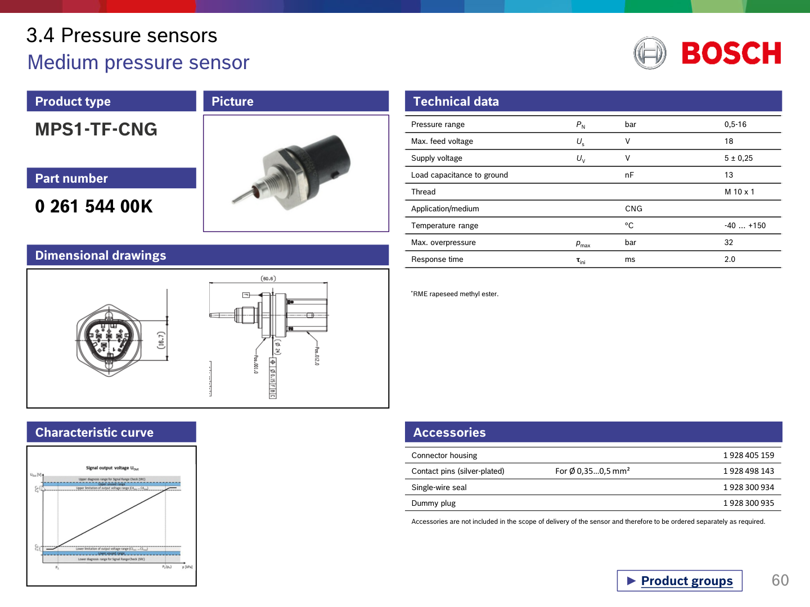

Date: 2026-07-16
Status: Verified against Bosch source material
The transfer function is defined in the Bosch i-business catalog (2025-11-12 edition).

The catalog defines the characteristic data for all MPS1 medium pressure sensors:
| Symbol | Meaning | Value |
|---|---|---|
| UA | Output voltage | -- |
| UV | Supply voltage | -- |
| US | Input voltage | -- |
| p | Pressure | [MPa] |
| C0 | Offset coefficient | 0.1 |
| C1 | Span coefficient | 0.8 * p / PN |
| PN | Rated pressure | [MPa] |

Key specifications for the MPS1-TF-CNG (part number 0 261 544 00K):
| Parameter | Value |
|---|---|
| Pressure range PN | 0.5 -- 16 bar |
| Max. feed voltage Us | 18 V |
| Supply voltage UV | 5 +/- 0.25 V |
| Load capacitance to ground | 13 nF |
| Thread | M10 x 1 |
| Application/medium | CNG |
| Temperature range | -40 to +150 deg C |
| Max. overpressure pmax | 32 bar |
| Response time tau_ini | 2.0 ms |
The MPS1 platform uses a unified transfer function where each variant is calibrated via its rated pressure P_N:
For the CNG variant, the catalog specifies P_N = 16\ \text{bar} = 1.6\ \text{MPa} = 1600\ \text{kPa}:
Substituting into the platform formula:
Inverse (pressure from voltage):
| Coefficient | Symbol | Value | Unit | Source |
|---|---|---|---|---|
| Offset | C0 | 0.1 | dimensionless | Catalog p.58 |
| Rated pressure | P_N | 16 | bar | Catalog p.60 |
| Rated pressure | P_N | 1600 | kPa | Conversion |
| Gain | c1 | 0.0005 | kPa^-1 | c1 = 0.8 / P_N |
| Sensitivity | -- | 0.25 | V/bar | c1 * US * 100 |
| Sensitivity | -- | 2.5 | mV/kPa | c1 * US |
| Pressure (bar) | Pressure (kPa) | U_OUT @ US=5.0V (V) |
|---|---|---|
| 0 | 0 | 0.500 |
| 0.5 | 50 | 0.625 |
| 1 | 100 | 0.750 |
| 2 | 200 | 1.000 |
| 3 | 300 | 1.250 |
| 4 | 400 | 1.500 |
| 5 | 500 | 1.750 |
| 6 | 600 | 2.000 |
| 7 | 700 | 2.250 |
| 8 | 800 | 2.500 |
| 9 | 900 | 2.750 |
| 10 | 1000 | 3.000 |
| 11 | 1100 | 3.250 |
| 12 | 1200 | 3.500 |
| 13 | 1300 | 3.750 |
| 14 | 1400 | 4.000 |
| 15 | 1500 | 4.250 |
| 16 | 1600 | 4.500 |
The sensor uses the complete ratiometric output range of the MPS1 platform:
| Range | Symbol | Fraction of US | Voltage @ 5V | Pressure Equivalent |
|---|---|---|---|---|
| Lower SRC diagnostic | Usrcl | [0.00 ... 0.04] | 0.00 -- 0.20 V | Fault: short to GND |
| Lower unused | -- | ]0.04 ... 0.06[ | 0.20 -- 0.30 V | Transition |
| Lower clamp | Ucll (C1) | [0.06 ... 0.10] | 0.30 -- 0.50 V | Output limitation |
| Measurement start | Umrb (C2) | 0.10 | 0.50 V | ~0 bar |
| Measurement end | Umre (C3) | 0.90 | 4.50 V | ~16 bar |
| Upper clamp | Uclh (C4) | [0.90 ... 0.94] | 4.50 -- 4.70 V | Output limitation |
| Upper unused | -- | ]0.94 ... 0.96[ | 4.70 -- 4.80 V | Transition |
| Upper SRC diagnostic | Usrch | [0.96 ... 1.00] | 4.80 -- 5.00 V | Fault: short to UB |
Usable measurement span: 4.0 V (0.5 V to 4.5 V) corresponding to 0--16 bar.
Sensitivity: 0.25 V/bar (2.5 mV/kPa).
With the existing GAIN_TWOTHIRDS setting (+/-6.144 V, 3 mV/LSB):
| Metric | Value |
|---|---|
| ADC steps across 0--16 bar | 4.0 V / 0.003 V = ~1,333 steps |
| Pressure per ADC step | 16 bar / 1333 = ~0.012 bar |
| Effective resolution | ~12 mbar per LSB |
This is excellent for pressure control -- no gain switching needed. The GAIN_TWOTHIRDS setting that VentCon2 already uses is perfectly adequate.
| Pin | Function | ESP32 Connection |
|---|---|---|
| 1 | GND | GND |
| 2 | NTC (temperature) | Optional -- ADC channel if needed |
| 3 | +5V (supply) | 5V rail |
| 4 | U_OUT (pressure) | ADS1015 AIN0 or ESP32 ADC |
Sensor type: Bosch MPS1-TF-CNG (P/N 0 261 544 00K)
Transfer function: p_bar = 4.0 * U_V - 2.0
Min voltage: 0.5 V
Max voltage: 4.5 V
Min pressure: 0.0 bar
Max pressure: 16.0 bar
Ratiometric: Yes (measure Uout/Us ratio for best accuracy)
| Accessory | Part Number | Notes |
|---|---|---|
| Sensor | 0 261 544 00K | MPS1-TF-CNG |
| Connector housing | 1 928 405 159 | -- |
| Contact pins (silver-plated) | 1 928 498 143 | Wire dia. 0.35--0.5 mm2 |
| Single-wire seal | 1 928 300 934 | -- |
| Dummy plug | 1 928 300 935 | For unused cavities |
Accessories not included with sensor -- order separately.
Characteristic curve determined from Bosch i-business catalog (2025-11-12), Section 3.4 Medium Pressure Sensors, cross-validated against MPS1 platform TCD RB 0 261 K00 13H.